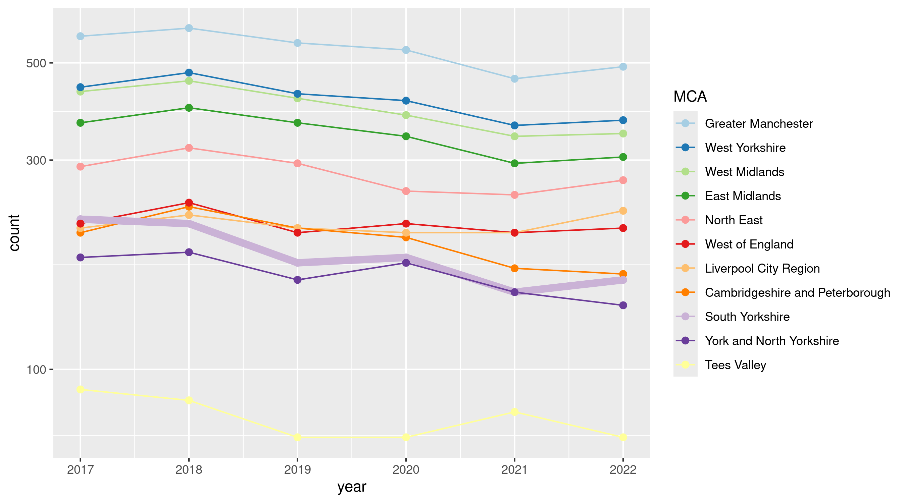

ONS Business Demography dataset 2017-22: what does it say about South Yorkshire?
Headlines
- High growth firms in South Yorkshire and nationally (10+ employees and 20%+ employee growth av per year over 3 years):
- Since 2017, the number and proportion of high growth firms has dropped almost everywher - but place’s positions relative to each other have hardly changed.
- South Yorkshire (and Sheffield, Barnley, Doncaster + Rotherham separately) have remained at or near the bottom for proportion of high growth firms, with Rotherham in particular dropping over time. (See Figure 1, Figure 2, Figure 3.)
- Business births and deaths:
- Nationally, business births have outnumbered deaths in every year in this data - but firm deaths have steadily increased in last 4 or so years.
- South Yorkshire is near the top of MCAs for births as a percent of active firms - increasing over time, putting it in a higher group with West Midlands, Liverpool and Greater Manchester. SY has followed the national trend of increasing firm deaths as a percent of active firms, sitting in the middle rankings. (See Figure 4.)
- Figure 5 examines the same for core cities plus BDR. The stand-out here is Doncaster with high birth and death proportions compared both to other core cities and the other three SY places. Since 2018-20, all four places except Sheffield have seen births and deaths relative to active firms rise. Sheffield is relatively low for births and, in this data, it has dropped to the lowest birth value. (Note: only compared to the local authorities in this short list.)
The data used
- The ONS Business Demography dataset contains counts of active firms, births, deaths, ‘high growth’ firms (20%+ employee growth over 3 years) and active firms with 10+ employees, from 2017 to 2022.
- At local authority or MCA level, it does not break these counts down by sector (those are only at national level).
- Here, it has been harmonised to backcast 2022 local authority borders to create a time series.
The detail / plots
High growth firms
Raw high growth firm numbers have been declining almost everywhere in the UK since 2017. Figure 1 shows raw count of high growth firms for MCAs (thicker line is South Yorkshire).
However, most places haven’t changed relative position very much over time, with one or two exceptions.
The same overall pattern is visible in Figure 2, looking at high growth firms as a percent of active 10+ employee firms (“high growth firms” in ONS is also 10+ employees only).
Thicker line is South Yorkshire.
Liverpool City Region appears to be the only MCA bucking the trend.
Separate analysis shows it is mostly the drop in high growth firm count - not a large increase in active firms overall - causing this change. But note that firms can drop in/out of the “high growth” category with e.g. just one year of below-20% employee growth.
Figure 3 also shows high growth firms as a percent of active firms but showing Sheffield, Barnsley, Doncaster & Rotherham separately (thicker lines) against English/Scottish core cities (minus Cardiff & Belfast).
The same story of stable positions against secular trend dropping is here, with S+BDR always near the bottom - but Rotherham more recently dropping more than others (and again, Liverpool the only place here goin the other way).
Using 16+ in employment (not shown here) doesn’t change the relative position / direction of S+BDR.
Separate analysis again shows, for S+BDR, drops in raw ‘high growth’ firms against (smaller) rises in 10+ employee active firms.
Births and deaths
Nationally, business births have outnumbered deaths in every year in this data - but firm deaths have steadily increased in last 4 or so years.
Figure 4 shows South Yorkshire near the top of MCAs for births as a percent of active firms - increasing over time, putting it in a higher group with West Midlands, Liverpool and Greater Manchester. SY has followed the national trend of increasing firm deaths as a percent of active firms, sitting in the middle rankings.
Figure 5 examines the same for core cities plus BDR. The stand-out here is Doncaster with high birth and death proportions compared both to other core cities and the other three SY places. Since 2018-20, all four places except Sheffield have seen births and deaths relative to active firms rise. Sheffield is relatively low for births and, in this data, it has dropped to the lowest birth value. (Note: only compared to the local authorities in this short list.)